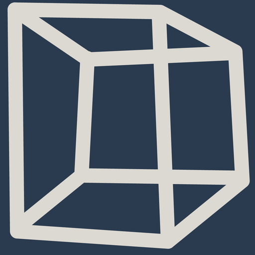
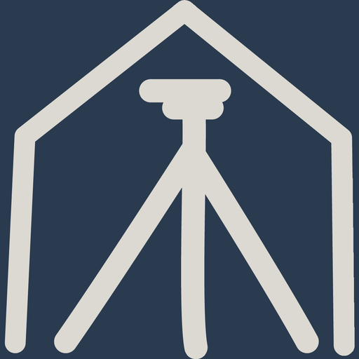
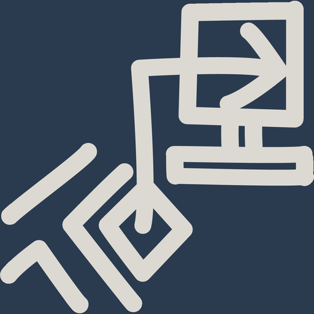
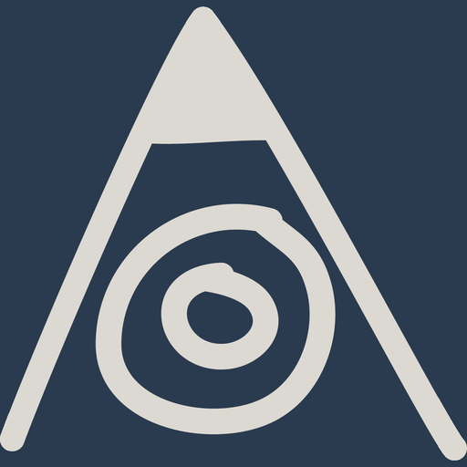
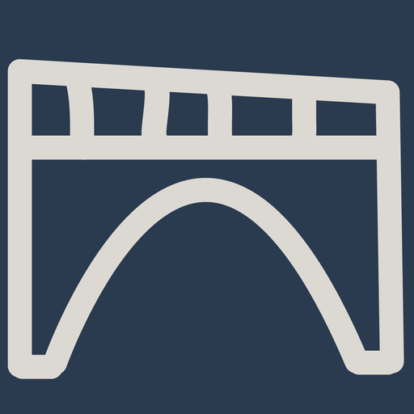

Der berufsbegleitende Lehrgang qualifiziert Fachleute der Geomatik für anspruchsvolle Aufgaben in Vermessung, Geoinformation und Bauwesen – mit eidgenössisch anerkanntem Abschluss.
Auf einen Blick
Alle Eckdaten, die vor der Anmeldung zählen – ohne Suchen.
Pflichtteil
Die gemeinsame Grundlage für alle Teilnehmenden.
Vertiefung
Mindestens fünf Wahlmodule werden für den Fachausweis angerechnet. Jedes Wahlmodul ist auch einzeln als Weiterbildung buchbar.
 Modul S1
Amtliche Vermessung
Modul S1
Amtliche Vermessung

Modul S2 3D-Geodaten Modul S3 Landmanagement
Modul S4 Geomatik im Bauwesen
Modul S5 GIS Modul S6
Erfassungstechnik
Modul S6
Erfassungstechnik

Modul S7 Fixpunkte
Modul S8 BautechnikWahlmodule ohne garantierte Durchführung finden vorbehaltlich einer ausreichenden Zahl von Anmeldungen statt. Die aktuelle Modulplanung liegt im Downloadbereich.
Weg zum Abschluss
Wir klären mit Ihnen Voraussetzungen, Anrechnungen und den passenden Einstiegszeitpunkt.
Anmeldung online; Aufnahme auf die Warteliste, falls ein Modul ausgebucht ist.
Fünf Module mit je einem Modulabschluss.
Mindestens fünf Module nach fachlichem Schwerpunkt.
Anmeldung zur eidg. Berufsprüfung über die Qualitätssicherungskommission (QSK).
Downloads
Aktuelle Planungsdokumente zum Herunterladen.
Hinweis aus dem Workshop: Der bisherige Studierendenbereich (Dokumente, interne Unterlagen) wird künftig über Microsoft Teams abgewickelt und entfällt auf der Website. Öffentlich bleiben nur die hier gezeigten Planungsdokumente.
Abschluss
Der Lehrgang schliesst mit der eidgenössischen Berufsprüfung Geomatiktechnik ab. Prüfungsordnung, Wegleitung und Durchführung verantwortet die Qualitätssicherungskommission (QSK).
Das Sekretariat berät Sie persönlich – auf Deutsch, Französisch oder Italienisch.